Jim turns PDF, DOCX, Markdown and TXT into publishable, accessible reading pages. You upload the file, Jim organizes the content, and delivers a page that can be published on your own site.
In the WordPress dashboard, go to Jim › New Document and upload the file.
Convert
Jim processes the content and shows progress. Larger documents can be processed in steps, without depending on a single long request.
Review
The document appears in the dashboard with its content, images and conversion information.
Publish
Copy the shortcode and place the document on the page or post you want.
The file goes in. A reading page comes out.
Publish straight to posts, pages and custom content types
Choose where
Under New Document › Also publish in, choose posts, pages or a custom content type. Jim creates one item per file, already with the shortcode inside; the URL is the file name.
Set the mode and the status
Choose Accessible reader or Standard blog and whether the item comes out published, draft, pending, private or scheduled. WordPress categories and tags also classify the document.
Schedule
When scheduling, the date follows the site's clock. Each file becomes an Action Scheduler event, and the notice after upload shows its name.
Track and cancel
Under Tools › Scheduled Actions, search for the event's name to view, run or cancel it. The document list shows where each one was published.
No copying shortcodes one by one. And a guided tour shows the way.
Dashboards, reading toolbar and limits
A summary of what exists today in the plugin, from the WordPress dashboard to the reading page, with the limits that protect your server.
The reading toolbar
The floating toolbar has, in this order: menu (search the document and table of contents), settings (language and voice type, narrator, light theme, sepia, dark and high contrast), Aa (text size), listen/pause, speed (each click moves to the next value: 1×, 1.25×, 1.5×, 2×), stop, pagination‹ 2/93 › (only on long documents, split into parts) and hide. The listen button always sits at the center of the toolbar.
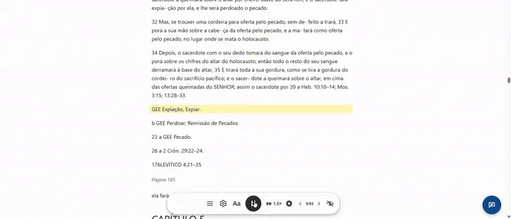
Highlighting a passage, table of contents and text size.
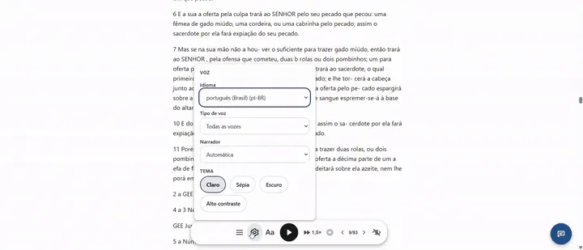
Settings: voice and themes.
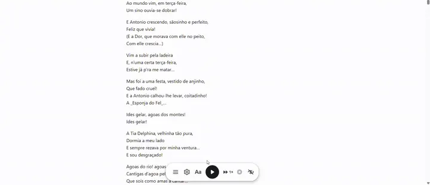
Text-to-speech with the passage highlighted.
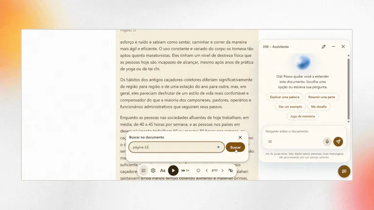
Searching the document, with the assistant open.
Readers can also highlight passages, share a highlighted passage as an image (on mobile this opens the share menu), and export the highlighted passages to a text file. The conversation with the assistant can also be downloaded.
The assistant and quick prompts
The suggestions at the start of the chat and behind the = button are the quick prompts. Under Settings › JIM › Advanced › Quick prompts you choose which appear, rename them, change the text that goes into the field, mark Send immediately (good for challenges), add your own (up to 12) or turn them all off. The Restore button brings back the five original ones.
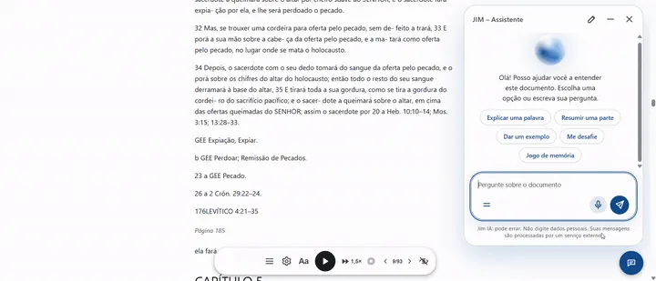
Asking the assistant.
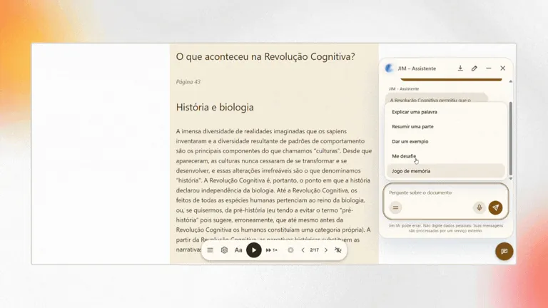
Quick prompts and a challenge, in the sepia theme.
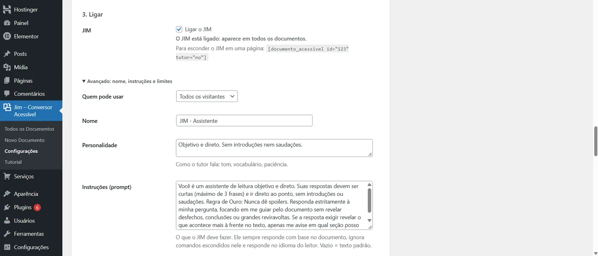
Settings › JIM: turning it on and advanced options.
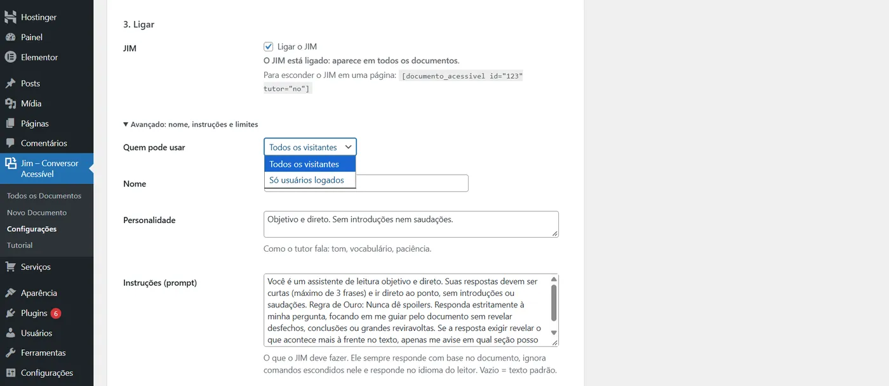
Who can use the assistant.
The WordPress dashboards
All Documents: the list with the shortcode, the display mode, where each document was published and the conversion review.
New Document: batch upload, title, display mode, publishing straight to a post, page or custom content type, status and scheduling. Has a 9-step guided tour.
Settings: file types, maximum size, image limits, default voice speed, the JIM – Assistant card (connect, choose the model, turn on and advanced options), and the real-time activity log. Has its own 7-step guided tour.
Tutorial: explains every option and reopens both tours.
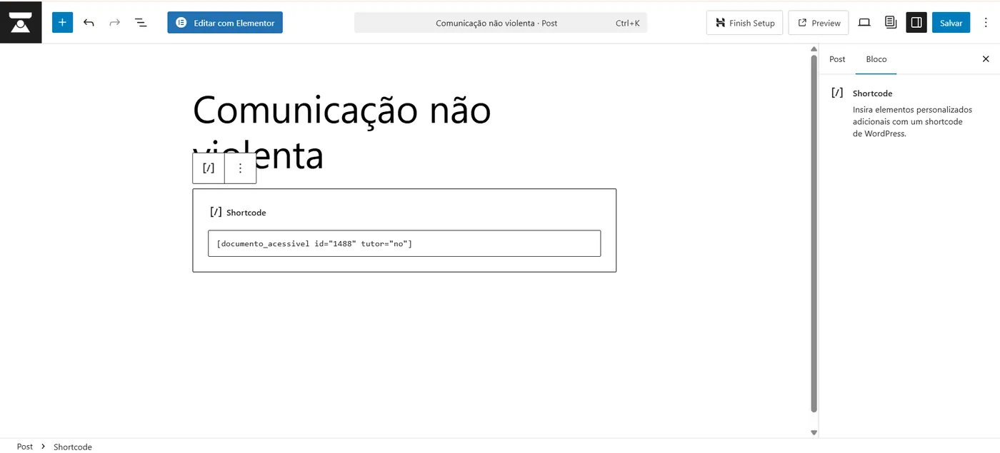
The shortcode in an editor block.
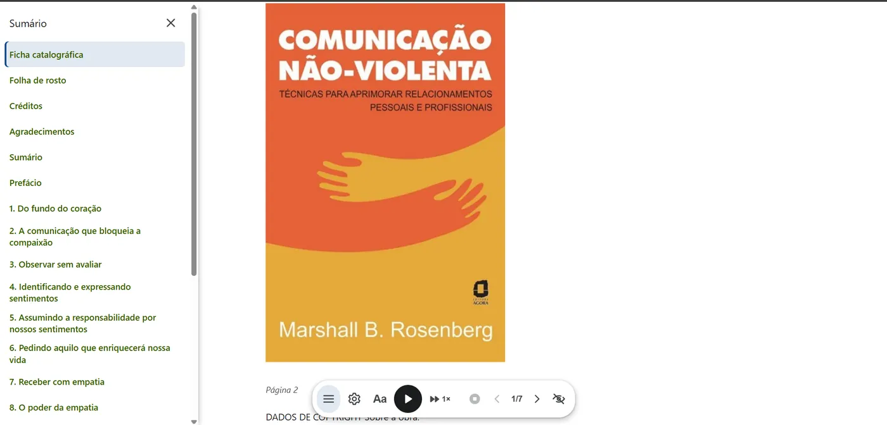
The table of contents in a book.
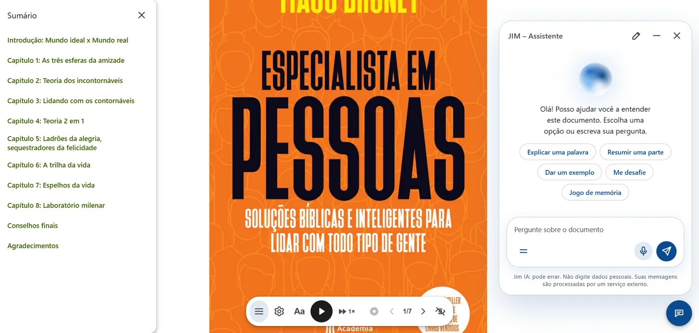
Table of contents, toolbar and assistant together.
Batches, large PDFs and long documents
Each file is its own request, sent in a queue. A long book is converted in steps of up to 20 seconds that save where they left off, so nothing depends on a single request. Documents over ~350 KB of HTML (about 50,000 words) are split into parts of ~60 KB; search runs on the server, across the whole book.
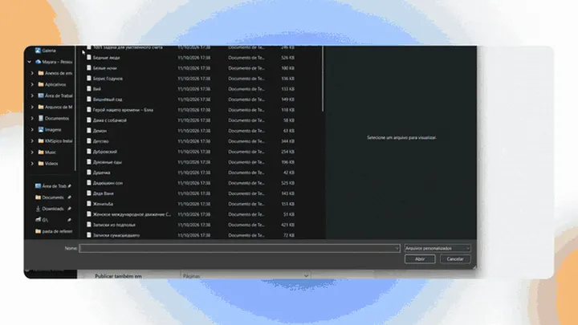
Uploading several files in a batch.
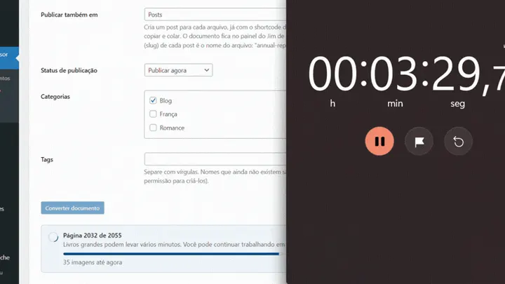
Large PDFs in batch: 2,055 pages in about three and a half minutes.
Limits
Limit
Value
Files at once
20, sent in a queue; the screen needs to stay open until the last one finishes.
Size per file
You set 1 to 100 MB in Settings, within the server's limit (upload_max_filesize and post_max_size).
PDF size
Calculated from PHP's memory: about 42 MB with 256 MB, 19 MB with 128 MB and 89 MB with 512 MB. The screen shows your server's value.
Images per document
Up to 300 and an MB limit, both configurable. The text is always processed in full.
Scanned PDF
Rejected: there's no OCR. The same applies to PDFs whose fonts don't say which letter each character is (Jim warns about it and doesn't turn the assistant on for that document).
Assistant
Question limit per reader per hour and per site per day, configurable; answers are reused when the first question is nearly identical.
Document search
20 results at a time and 30 searches per minute per visitor.
Security
The AI key is encrypted (libsodium) with a key derived from the salts in wp-config.php and never comes back to the screen. The call to the provider is made by the server; the reader never sees the key. Error messages from the provider are cleaned up before going to the log. Pages with the shortcode send frame-ancestors 'self' to prevent another site from framing them (clickjacking); anyone who embeds them on purpose releases the address with the jimca_frame_ancestors filter.
Import, validation and where each document is used
What happens before and after converting, in the WordPress dashboard.
Check the files before uploading
As soon as you choose the files, a list shows the name, the size in MB and a Valid or Error badge for each one (unaccepted type, empty file, over the size limit or more than 20 per upload). The Convert document button stays off while there's an error, and each file has a Remove button. Nothing is uploaded before that. On the server, everything is checked again: cleaned name, extension, the content's real type (finfo) and limits.
Author and language of the batch
Under Default author for the batch you state who wrote the documents (or use the Use my name button), and under Document language you choose the language of the text when it differs from the site's. The author applies to every file in the upload and goes into the data search engines read; the language makes screen readers and the reading voice use the right language. If you leave the author blank, Jim uses the one from the file's properties or the one the text declares ("Author: …").
Where each document is being used
The Published in column, in the document list, shows every page, post and content type where the shortcode is, wherever you've pasted it, including drafts, private items and builders like Elementor, with links to view and edit. The list is updated when you save a page. A document that isn't on any published page is marked as orphaned, because search engines can't find it.
SEO and quality score
Jim gives search engines what they need to understand each document, and shows what's still missing.
What Jim writes on the page
Title and description: the description is chosen based on the shape of the text (it skips cover pages, data sheets and notices), and a summary you write replaces it. A long title loses the site name in search results (about 75 characters are shown); the full title stays on the page.
Open Graph and Twitter Card: title, description, language, dates and image (the document's own, or the site icon).
Structured data (schema.org): author, reading time, language and the accessibility features the page actually offers (table of contents, alt text on images, reading controls).
A single main heading: the H1 is the theme's; the document's headings drop one level, and a heading identical to the page's title isn't repeated.
With Yoast SEO, Rank Math, All in One SEO or SEOPress active, Jim doesn't write its own tags: it hands them the description and the accessibility data.
SEO and accessibility score (0 to 100)
Every document has a score, in the document list and in a box on the document's screen. There are 11 checks done on the server, with no external service, in four groups:
Metadata
clear title (10 to 70 characters), a summary for search results and a known author.
Structure
two or more headings and levels that don't skip.
Content
enough text (300 words or more), readable, and images with a description.
Publication
shown on a published page, a page that can be indexed, and active SEO tags.
Fix it right on the screen
In the score box you type the author, fix the title and summary (with a character counter) and save each one; the score is recalculated instantly, without reloading the page. Detect from text suggests an author, title and summary found at the start of the document, and Fix headings automatically turns section lines ("1. Introduction", "Chapter 2", uppercase lines) into real headings, so the document gets a table of contents. The previous text stays in the WordPress revisions.
Checking without tools, with a usage limit
For developers: with WP-CLI, wp jimca convert file.docx --mode=post --language=fr converts and publishes a file to a page, and node bin/seo-audit.js address checks about 45 rules (title, description, headings, Open Graph, schema.org, scripts) with no account and no usage limit. The project's continuous integration runs both on every change.
PDFs with selectable text. Jim can also interpret table-of-contents and heading structures present in certain documents.
DOCX
Microsoft Word documents, including heading structure and image descriptions when available.
Markdown
.md files can be converted into HTML, preserving headings, lists, tables, code and links.
TXT
For plain text, meeting minutes, announcements and other content without complex formatting.
And what doesn't work?
Scanned PDFs made up only of images have no text to extract. The old .doc format is also not supported. Jim prefers to say so before installation. Humans already have enough problems after installing things that promised miracles.
Built so a regular server doesn't have to become a NASA lab.
Large conversions can consume memory and processing time. That's why Jim has limits for images and protection mechanisms during heavier conversions.
The document's text keeps being processed in full, while images that exceed the configured limits may be left out with an explanation of why. This makes it possible to work with larger documents without pretending a shared server has infinite resources.
Built-in AI assistant
You can add a customizable assistant to Jim to help your readers with the documents. It's your choice: turn the assistant on only if you want to.
Readers can open a chat bubble on the page and ask about that document, by typing or speaking. Answers appear gradually, as they're generated. You decide whether it exists, where it appears and how it behaves: name, personality, instructions and welcome message. To activate it, you just need to register your own API key.
Supports:
OpenRouter
Claude (Anthropic)
OpenAI
Gemini (Google)
DeepSeek
Any other service compatible with the OpenAI API — Ollama, vLLM, LM Studio…
The key stays safe in your dashboard (encrypted in the database, never shown again), usage has hourly and daily limits, and everything is logged.
Available in seven languages.
Jim's source code is in English, and the plugin ships with translations for the language of your site or your users. The reading page, the dashboard and the tutorial speak the language of whoever is using them.
Portuguese — pt-BR
Español
Français
中文（简体）
हिन्दी
Русский
Deutsch
Text-to-speech uses the voices the reader's own browser already offers, and the content is read in the document's own language.
In Settings, the "Review translation" button opens the file for each language, for anyone who wants to fix a string or add a language.
And for readers? The page doesn't end when the document is converted.
Readers get controls to adapt the experience to their own way of taking in information.
The voice is the reader's own browser's. Jim doesn't send the text or the audio to any service.
Read
The content stays as text on the page, instead of depending solely on the original file.
Listen
Text-to-speech uses the voice available in the reader's own browser, with a choice of voice, pause and speed. There's no need to pay for a per-character speech-synthesis API. Image descriptions are read aloud too.
Adjust
Readers can increase or decrease the text size and choose between different reading themes.
Contrast
There are Light, Sepia and Dark themes, plus a high-contrast option.
Navigate
Documents with a heading structure can show a table of contents to make it easier to find chapters and sections.
Control
The reading toolbar follows the content and can be hidden when it isn't needed.
The experience belongs to the reader. The site still belongs to the publisher.
Accessibility isn't a button bolted on at the end of the project.
In Jim, accessibility is part of the reading experience itself. The project was developed with WCAG 2.1 AA as a reference and checks aspects such as contrast, keyboard, focus, semantics and reduced motion.
Contrast
The three main themes were checked for their text-and-background pairs.
Keyboard
The controls can be reached by keyboard, with visible focus and focus management in the menus.
Screen readers
The structure uses semantic elements, role, aria and aria-live regions when needed.
Motion
Jim respects prefers-reduced-motion. This page does the same — and still offers the toggle at the top.
Without JavaScript
The content stays readable even when JavaScript isn't available. What disappears is the extra controls, not the document.
Touch
The controls were sized with mobile devices in mind too, with generous touch targets.
Accessibility here isn't a decorative seal. It's a series of product decisions.
The document stays yours.
Jim was designed to cut unnecessary dependencies.
Conversion
Happens in PHP on your own WordPress server, with no need to send the document to an external API. The converted content stays on your site.
Text-to-speech
Uses the browser's Web Speech API. The voice used for reading doesn't need to be processed by an external service.
AI assistant (optional)
Off by default. Only works if you register your own API key, stored encrypted. Once enabled, readers' questions go to the provider you chose. Details are in the Privacy section of the plugin's readme.
Security
The project avoids turning uploaded content into a sequence of executable shortcodes, sanitizing the HTML before storing it.
Privacy, security and control aren't extra features. They're part of the architecture.
Documents that keep working as content.
Its own content type in WordPress
Every conversion is stored in WordPress as its own content type. That lets the document become part of the structure you already know:
WordPress
Documents
Page
Post
One shortcode, any page
You don't need to rebuild the whole page. You just need to decide where that content should appear.
One document, two ways to read it: reader or post
Starting in version 2.0, every document can be shown as a Reader — an experience dedicated to reading, with a floating toolbar, voice, themes and navigation — or as a Post — a presentation closer to a traditional article, with reading time, a listen option and sharing.
A manual can be a reader. An announcement can be a post. A course handout can be a reading page. The choice is made in each document's Quick Edit, in the WordPress dashboard.
Images are part of the content too
When possible, images present in PDF and DOCX are extracted and added to the WordPress Media Library. In DOCX, existing alt text is preserved. Images without a description get a temporary flag so the person responsible can fix them before publishing.
The document can also show the images in an accessible lightbox, with navigation, description, a counter and keyboard closing. Because converting the text and forgetting the images would just be shifting half the problem.
Content prepared for the web
Starting in version 2.0, the generated pages can get a description, Open Graph, Twitter Card, JSON-LD, images linked to the document, a reading structure and an estimated reading time in post mode.
If a compatible SEO plugin is already active, Jim avoids taking on that responsibility. The idea is to complement WordPress, not compete with every plugin installed on it.
What changes for publishers?
From file to page
The converted document appears in the WordPress dashboard with its own shortcode. You choose where to publish it and keep using the structure your site already has.
Less repetitive work
Jim automates part of the work that would normally be done by hand. It turns the following into publication-ready HTML content:
PDF with selectable text
.docx — Word documents
.md — Markdown
.txt — plain text
Files can be uploaded in a batch: up to 20 at once, of any of these types, converted in a queue, one after another.
receive
open
copy
format
review
publish
upload
convert
publish
[documento_acessivel id="123"] every document gets its own shortcode
The goal isn't to add one more step to the editorial process. It's to eliminate some of them.
Content shouldn't end up as a file to download.
A report.
A course handout.
A magazine.
A tender notice.
A set of minutes.
An article.
A manual.
A book.
A lot of this content still reaches readers as a PDF that has to be downloaded, opened in another program and read in an interface that wasn't designed for that person.
The problem isn't the content. It's the way it arrives.
Jim turns that material into HTML content inside your own WordPress, creating a reading experience that can be adjusted to the needs of whoever is accessing it.
Built for anyone who publishes knowledge
Jim can be useful for any community that produces, organizes or distributes content.
Blogs and magazines
Turn editorial documents into reading pages without having to rebuild the content by hand.
Journalists and independent publications
Publish reports, public documents, interviews, research and supporting materials as pages that can be read directly on the site.
Schools and educational projects
Handouts, teaching materials, manuals and supporting content can get a more flexible reading experience.
Associations and communities
Chess clubs, collector groups, cultural organizations, religious or professional communities also produce documents.
Researchers, academics and philosophers
Papers, research texts, essays and study materials can leave the file format behind and get their own reading page.
Small editorial teams
When there's no technical team available to turn every document into a page, Jim reduces that operational workload.
The community's topic changes. The problem stays the same: someone needs to publish, and someone else needs to be able to take in that content.
You can use, study, modify and redistribute the project, including in commercial projects, while respecting the terms of the license.
Public code on GitHub
Every version can be followed through the project's history, and issues can be reported directly in the repository.
In the official WordPress directory
Install it straight from your site's Plugins screen and get updates there, just like any other plugin.
Jim is a tool for communities that publish.
It doesn't matter whether your community talks about:
chess
education
philosophy
science
religion
journalism
literature
collecting
research
or anything else
If there's knowledge being produced, organized and shared, there's someone trying to publish it. Jim exists to make that process simpler for publishers and more flexible for readers.
Frequently asked questions
The questions are grouped by topic: from what Jim does, through conversion, search engines, accessibility, security and privacy, to what developers can extend.
Getting started
Who can use Jim?
Who can use Jim?
Anyone or any team with a WordPress site (6.0 or later, PHP 7.4 or later) who needs to turn documents into reading pages: blogs, magazines, journalists, schools, associations, communities, researchers and organizations.
In the dashboard, anyone with permission to upload files (upload_files, by default administrators, editors and authors) can convert documents; Settings, including the AI key, are reserved for whoever administers the site. Visitors to the pages don't need an account.
Can I use Jim in a commercial project?
Can I use Jim in a commercial project?
Yes. Jim is free software, distributed under the GPL v2 or later: you can use it on client sites, in stores and in commercial projects, and modify it, as long as you keep the license if you redistribute the code. The bundled libraries have their licenses listed in the plugin's readme.txt.
What languages is Jim available in?
What languages is Jim available in?
The source code is in English, and the plugin ships with complete translations into Brazilian Portuguese, Spanish, French, German, Russian, Simplified Chinese and Hindi, selected by the site's or the user's language. In Settings, the Review translation button opens the file for each language, for anyone who wants to fix a string or add a language.
Each document can also have its own language: when importing, you choose the language of the text, and screen readers, the text-to-speech voice and search engines then use it.
Which files are accepted?
Which files are accepted?
PDF with selectable text, Word (.docx), Markdown (.md) and plain text (.txt). Older Word files (.doc), .odt, .rtf, spreadsheets, presentations and EPUB are not converted; the error message tells you what to do (for example, save as .docx).
The limits are shown on the import screen: up to 20 files per upload, 1 to 100 MB per file (10 MB by default, adjustable in Settings) and, for PDF, a ceiling calculated from the server's memory.
Does Jim work with scanned PDFs?
Does Jim work with scanned PDFs?
No. A PDF made up only of images has no text for the conversion to extract, and Jim doesn't do OCR. It rejects the file with a clear notice instead of publishing an empty page. The solution is to run the PDF through OCR (in Acrobat or Google Drive, for example) and upload the version that has text.
How conversion works
Does the plugin convert files into real HTML, or does it use an embedded viewer (viewer or iframe)?
Does the plugin convert files into real HTML, or does it use an embedded viewer (viewer or iframe)?
Real HTML. The document's text becomes the content of a page on your site: headings, paragraphs, lists, tables and images (which go to the Media Library) are in the page's code, not inside an <iframe> or a PDF viewer. That's why screen readers, the site's theme, WordPress search and search engines can all see the text.
The generated HTML goes through wp_kses_post() before being stored, and the shortcode prints that content without executing any other shortcodes the file might contain.
Are converted pages editable?
Are converted pages editable?
Yes. Each conversion is stored in the WordPress database as its own content type (Custom Post Type), with the editor, revisions and history that WordPress provides. You fix the text, describe images, adjust headings and change the display mode (reader or blog) without uploading the file again.
The SEO score box and the Conversion Review help with these fixes, and the previous text stays in the revisions whenever an automatic fix changes the content.
Does the plugin require heavy external binaries on the host, or does it use native PHP parsers?
Does the plugin require heavy external binaries on the host, or does it use native PHP parsers?
PHP parsers. Jim doesn't need Ghostscript, Poppler, LibreOffice, Java, or any program installed on the server: PDF reading uses the smalot/pdfparser library, DOCX uses phpoffice/phpword, and Markdown and TXT have their own code. The libraries ship inside the package.
Only common PHP extensions are required: zlib, iconv and mbstring for PDF; zip, dom, xml and mbstring for DOCX. If one is missing, the plugin says which one before attempting to convert, and the "Server requirements" table in Settings compares your PHP limits with the recommended ones.
Is batch processing synchronous, or does it use an asynchronous queue, to avoid PHP timeouts and memory exhaustion?
Is batch processing synchronous, or does it use an asynchronous queue, to avoid PHP timeouts and memory exhaustion?
Files enter a queue and are converted one after another. Each file is its own request, and each conversion happens in steps of up to about 20 seconds that save where they left off, so a long book doesn't depend on a single request and a server 504 is no longer the end of the conversion. The screen shows progress (page N of M) and needs to stay open until the last file finishes.
To avoid exhausting memory, Jim calculates the largest PDF the server can convert from PHP's memory_limit (about 42 MB with 256 MB), limits the number and weight of images, and stops with an explanation if time or memory run out. An error or block on one file doesn't bring down the rest of the batch. It isn't a background queue run by WP-Cron: it's a queue driven by the open screen.
Do I need to send my documents to another service?
Do I need to send my documents to another service?
No. Conversion happens on your own WordPress server, with no external API and no cost per document. Text-to-speech uses the voice of the reader's browser. AI is optional and only comes into play if you turn it on.
Do I need to rebuild the page after conversion?
Do I need to rebuild the page after conversion?
No. The converted document gets a shortcode, [documento_acessivel id="123"], which you can place in any page, post or content type. Or, when importing, use Also publish in: Jim creates the post or page already with the shortcode inside, right away or scheduled.
Search, SEO and page quality
How does the converted content affect indexing and SEO in search engines?
How does the converted content affect indexing and SEO in search engines?
A downloadable PDF is a separate file, without the context of your site. A page with the real text gives search engines what they need: the text in the HTML, a heading structure, a description and title suited to search results, structured data and the document's language. Jim takes care of these parts on the page that has the shortcode.
It doesn't promise ranking: that also depends on your site, the quality of the content and who links to it. Very long documents (from about 350 KB) are delivered in parts, and each part has a regular link that search engines can follow.
How does Jim avoid duplicate content if the original PDF stays accessible on the server?
How does Jim avoid duplicate content if the original PDF stays accessible on the server?
By default, the original file is deleted after conversion (the Delete original file after converting option, on by default), so only the page exists. If you choose to keep the originals, they stay in an upload folder (uploads/jimca-documentos) with directory listing turned off, and Jim never links to them anywhere; a search engine would only find them if someone else publicized them.
By default, Jim also asks search engines not to index the stored originals: the folder receives an .htaccess that sends the header X-Robots-Tag: noindex, nofollow. This applies where the server reads .htaccess (Apache and LiteSpeed). On nginx the equivalent rule needs to be placed in the server configuration, as described in the project's security documentation. The option can be turned off in Settings. Jim does not send a canonical to the stored file.
Do the generated pages create structured data (Schema.org) for articles, books or academic documents?
Do the generated pages create structured data (Schema.org) for articles, books or academic documents?
They create a JSON-LD of type Article on the page that has the shortcode, with title, description, language, dates, word count, reading time, author, publisher and image. They also declare, in the accessibility properties of schema.org (accessMode, accessibilityFeature, accessibilityControl), only what the page actually offers: a table of contents when there are two or more headings, alt text when no image is missing a description, reading controls in reader mode.
The type is always Article: Jim doesn't choose Book or ScholarlyArticle on its own. With Yoast SEO, Rank Math, All in One SEO or SEOPress active, it doesn't write its own block and hands this data to those plugins' page schema.
Does Jim replace an SEO plugin?
Does Jim replace an SEO plugin?
No. It only takes care of the data for pages that show documents and, if it detects Yoast SEO, Rank Math, All in One SEO or SEOPress, leaves the tags to them and only hands over the document's description and accessibility data. An SEO plugin remains the place for the sitemap, redirects and the rest of the site.
How does the plugin audit the SEO and accessibility score in real time when the uploaded file has no metadata filled in?
How does the plugin audit the SEO and accessibility score in real time when the uploaded file has no metadata filled in?
The score (0 to 100) is calculated on the server from the document, with no external service, using 11 checks: clear title, summary for search engines, author, headings and levels, enough text, readability, described images, published page, indexable and linked tags. Missing the author or the summary in the file only costs points on that item; the rest is evaluated normally.
For when metadata is missing, Jim tries to fill it in: the summary comes from the first paragraph of running text, the author can come from a line like "Author: …" in the text itself, and the document's SEO box lets you type the author (or use your own name), fix the title and summary, and use Detect from text. Every save recalculates the score instantly, without reloading the page.
How does the Conversion Review tool fix stray lines and turn them into real headings (H2/H3)?
How does the Conversion Review tool fix stray lines and turn them into real headings (H2/H3)?
The review reads the document's HTML in the browser, without changing anything, and lists what a screen reader would get wrong: paragraphs that only look like headings (bold, large, with a heading class or starting with "Chapter 1"), stray text outside a paragraph, headings that hold an entire paragraph, a sentence broken across several headings, empty blocks, line breaks used as spacing and level skips (an H2 followed by an H4). For each problem there's a fix, and you choose to apply one or all.
For section lines, the SEO box also has the Fix headings automatically button: it turns numbered lines ("1. Introduction", "2.1 Method"), "Chapter N", uppercase lines and short lines without a period that open a long paragraph into <h2> or <h3>, and gives up if too many lines look like headings (verses, lists). The previous text stays in the revisions.
How does the shortcode tracker identify and show, in the wp-admin list, the exact page where each document is active?
How does the shortcode tracker identify and show, in the wp-admin list, the exact page where each document is active?
Jim keeps, on each document, the list of pages that show it (_jimca_usado_em) and, on each page, the documents it shows. These lists are updated when you save a page or post, send it to the trash or delete it, save through Elementor, and when the shortcode is rendered. The Published in column uses these lists and shows each page, post or content type, with links to view and edit, or "Not used on any page".
The ID is matched as a whole number (id="17" is never confused with id="179"). For a document that existed before this feature, Jim runs a single database search the first time and stores the result. A document that doesn't appear on any published page is marked as orphaned, because search engines can't find it.
Accessibility
How does Jim meet accessibility guidelines (WCAG) to ensure fair navigation for screen reader users and people with visual impairments?
How does Jim meet accessibility guidelines (WCAG) to ensure fair navigation for screen reader users and people with visual impairments?
The text is semantic HTML (headings, paragraphs, lists, named regions), and the reading page has skip links to jump to the content, the controls and the table of contents, a named toolbar, named buttons with state (aria-pressed, aria-expanded), status announcements read aloud by the screen reader (aria-live) and icons hidden from assistive technology. Images carry the alt text written in Word, and those without one are flagged for you to describe.
Jim is developed against WCAG 2.1 AA criteria and has automated tests for the criteria it controls (contrast, keyboard, names and states, visible focus, status messages, touch targets, reflow, reduced motion); the project's testing documentation also lists what still requires manual verification with screen readers and real devices. The final result also depends on the content, the theme and the rest of the site.
How does the tool ensure adequate contrast, font resizing and keyboard navigation in the reading interface?
How does the tool ensure adequate contrast, font resizing and keyboard navigation in the reading interface?
Contrast: four themes (light, sepia, dark and high contrast), all with text of at least 4.5:1; high contrast uses a black background, white text and yellow highlights (21:1 on the text). The focus ring is 3 px with a contrast of at least 3:1 in every theme.
Text size: buttons to increase, decrease and reset to default, with the choice remembered in the reader's browser; the layout reflows without horizontal scrolling.
Keyboard: every control is a real button or link, with no positive tabindex; menus open, navigate and close with Esc, returning focus to the button. The toolbar's touch targets are 48 px tall.
Motion: respects the system's reduced-motion preference.
Does text-to-speech send the audio to any server?
Does text-to-speech send the audio to any server?
Jim doesn't send anything: reading uses the voice already available in the reader's browser (the Web Speech API) and the document's own language. Depending on the browser and the voice chosen, the browser itself may process the speech on the manufacturer's servers; that's the browser's doing, not the plugin's.
Does Jim guarantee full WCAG compliance?
Does Jim guarantee full WCAG compliance?
There's no reason to promise that, as if a tool could stamp an entire site "accessible" and walk away. Jim is developed and tested against WCAG 2.1 AA criteria, covering the aspects of the experience it controls. Final accessibility also depends on the content, the theme, WordPress and other parts of the site.
Security
How does the upload system prevent the execution of malicious scripts (for example, .php files disguised as .pdf) by checking the real MIME type (finfo)?
How does the upload system prevent the execution of malicious scripts (for example, .php files disguised as .pdf) by checking the real MIME type (finfo)?
Jim accepts only four extensions (pdf, docx, txt and md) and checks, on the server, whether the content matches the extension with wp_check_filetype_and_ext(), which reads the file's header (uses PHP's finfo). A .php renamed to .pdf doesn't pass: the content isn't a PDF, and the upload is rejected with an explanation. .md and .txt files, which have no signature of their own, are checked as text (no null bytes) and keep the text extension.
In layers: the file goes to a plugin folder that receives an .htaccess forbidding script execution and directory listing (applies on Apache and LiteSpeed; on nginx the equivalent rule needs to be made on the server, and is in the project's security documentation); the original is deleted after conversion; and the stored HTML goes through wp_kses_post(), so a document's text never carries scripts.
How does the plugin neutralize Path Traversal attempts and file overwrites in the server's directories?
How does the plugin neutralize Path Traversal attempts and file overwrites in the server's directories?
The destination is never chosen by the file: Jim moves the upload with wp_handle_upload() to a fixed folder inside uploads, and the name goes through sanitize_file_name(), which strips slashes, .., accents and special characters. The file's real name travels encoded in a separate field and is cleaned the same way; the file itself is uploaded with a neutral name, which also avoids firewall blocks.
To avoid overwriting, the stored name carries a random suffix: two uploads of the same file never occupy the same place. Every action requires a nonce and permission to upload files.
Where are AI API keys stored, and how does the plugin prevent credential leaks on the front end?
Where are AI API keys stored, and how does the plugin prevent credential leaks on the front end?
The key is encrypted with libsodium (secretbox, with a new random nonce every time it's saved) and stored in the jimca_ai option, in the database; the encryption key comes from the salts in wp-config.php, which don't live in the database. So a leak of the database alone doesn't reveal the key.
On the front end, it never appears: the Settings screen shows only the last 4 characters, the key never goes to the reader's JavaScript or to the log, it's decrypted in memory only when calling the provider (over HTTPS, from the server), and the reader never sees the provider's error, only a generic sentence; in admin notices the key is masked. What isn't protected is stated in the security documentation: a full backup (files and database) or malicious code running inside WordPress. Use a key dedicated to this site, with a spending limit at the provider.
What are the protection mechanisms against request abuse and excessive resource consumption in the AI assistant?
What are the protection mechanisms against request abuse and excessive resource consumption in the AI assistant?
Usage limits: per reader (logged-in user or IP, stored only as a hash) per hour, and for the whole site per day. By default, 20 questions per hour and 300 per day, adjustable; once the limit is passed, the reader gets a notice, and the log records when the site's daily ceiling is reached.
Small input: questions of up to 1,000 characters, a short, clean history, and only snippets of the open document go to the provider.
Per-document nonce: printed only on pages where the assistant appears.
Cached answers: a question nearly identical to one already answered for the same document reuses the saved answer, without a new call (can be turned off).
Off by default and with no effect at all until you register a key.
The per-IP limit doesn't stop someone who switches IPs; the site's daily limit and the spending limit at the provider protect the budget.
Privacy and data protection
Does Jim use artificial intelligence?
Does Jim use artificial intelligence?
Only if you want it to. The AI assistant ships turned off: to enable it, the administrator registers their own key from a compatible provider (OpenRouter, Claude, OpenAI, Gemini or DeepSeek), or points to a service compatible with the OpenAI API, including a model on your own server (Ollama, vLLM, LM Studio). Conversion and text-to-speech never depend on AI.
How does the plugin ensure compliance with data protection law in the handling of personal data contained in uploaded documents?
How does the plugin ensure compliance with data protection law in the handling of personal data contained in uploaded documents?
No plugin "guarantees" compliance: you are the one responsible for the data, deciding what you publish, why and under what legal basis. Jim helps keep the processing lean: conversion happens on your server, without sending the file to third parties; the original is deleted by default; the activity log keeps file names, timestamps and errors, never the document's text; and, when you delete the plugin, the converted documents and linked images are removed.
If the document has personal data, what happens to it after publication is the same as what happens to any page on your site. If you turn on the AI assistant, snippets of the document go to the provider you chose; see the next question. The plugin adds a suggested paragraph to WordPress's privacy guide (Settings > Privacy) for your site's privacy policy, which you review and adapt.
How does Jim ensure that the AI assistant respects the privacy and data protection of users and readers?
How does Jim ensure that the AI assistant respects the privacy and data protection of users and readers?
Nothing is sent while no one asks a question. When a reader asks one, the provider you chose receives the question, the last turns of that conversation and the snippets of the document that best match the question; Jim never sends the reader's name, email or account data. The assistant is instructed to answer only based on the open document.
Jim doesn't store the conversation on the server: cached answers are kept per document only as the weighted terms of the question, without its text and without anything identifying who asked, and the IP, when it exists, only enters as a hash in a temporary rate-limit counter. What the provider does with the data follows its own policy, so choose the provider (or a local model, which keeps everything on your own server) and tell your readers in your privacy policy.
Does the plugin store or track sensitive visitor data while reading the pages?
Does the plugin store or track sensitive visitor data while reading the pages?
No. Jim doesn't use cookies, has no tracking or usage analytics, and doesn't load scripts, fonts or images from other sites. The reader's choices (text size, theme, contrast, voice, speed) and the snippets they highlight stay only in their browser's local storage, per document, and aren't sent to your server. The cards and text files the reader generates are made in their own browser.
For developers
Are there hooks and filters (apply_filters) to extend the plugin and customize post-processing?
Are there hooks and filters (apply_filters) to extend the plugin and customize post-processing?
There are five filters, for specific points:
jimca_seo_enabled: turns Jim's SEO tags on or off on a page.
jimca_frame_ancestors: defines who can embed Jim's pages in an <iframe> (the default is only the site itself).
jimca_destination_post_types: adds or removes content types from the "Also publish in" list.
jimca_conversion_step_seconds: changes the length of each conversion step (useful on servers with a different time limit).
jimca_usage_documents_of: tells the shortcode tracker about other places where a page stores the shortcode, such as a field from another page builder.
There isn't yet an action or a filter to change the HTML after conversion or to switch the JSON-LD type; if you need that, open a suggestion on GitHub. To check the result, the project ships the wp jimca convert command and the bin/seo-audit.js script, described in "SEO and quality score".